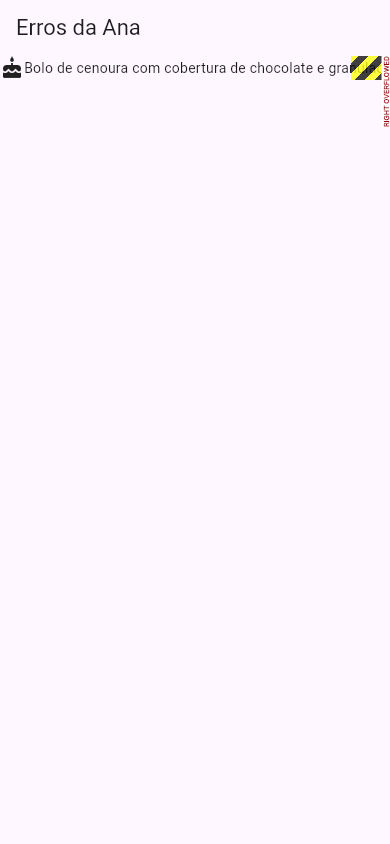
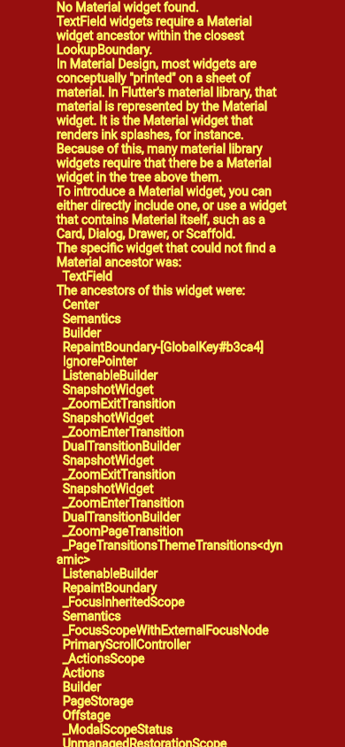

Flutter Mensagens de Erro Comuns
As mensagens de erro do Flutter são compridas e em inglês, mas quase sempre dizem exatamente o que está errado. Esta página reúne as que mais aparecem para quem está começando, como saíram de verdade no laboratório do guia (Flutter 3.47.7, Dart 3.13.5), com a tradução, a causa e a solução de cada uma. Use Ctrl+F com um pedaço da mensagem que você recebeu. O passo a passo de como ler uma mensagem qualquer está em Erros Comuns e Como Ler.
- De compilação: o app nem chega a abrir. A mensagem tem a forma
lib/main.dart:LINHA:COLUNA: Error: …, com a linha do código e os^^^embaixo do ponto exato. O VS Code sublinha esses erros em vermelho antes mesmo de rodar, e oflutter analyzetambém os lista (veja Comandos flutter). - Em tempo de execução: o app abre, e o erro aparece quando aquele pedaço roda. A mensagem vem num bloco
══╡ EXCEPTION CAUGHT BY … ╞══no console, e às vezes a tela fica vermelha (erro nobuild) ou com listras amarelas e pretas (overflow).
Os erros de tempo de execução abaixo foram colhidos no navegador (é onde o lab roda os apps). Quando você roda com flutter run num celular, a mensagem principal é a mesma; mudam os detalhes da pilha (as linhas com os arquivos de dentro do Flutter).
Tabela rápida
| Mensagem (pedaço) | Quer dizer | Solução mais comum |
|---|---|---|
Expected ',' before this. | Faltou uma vírgula entre dois parâmetros | Pôr a vírgula no fim da linha anterior |
The getter 'x' isn't defined | Esse nome não existe ali | Conferir a grafia ou criar a variável |
The argument type 'int' can't be assigned to the parameter type 'String' | Tipo errado num parâmetro | Converter ('$n', n.toString()) |
The method 'setState' isn't defined | setState num StatelessWidget | Transformar em StatefulWidget |
Not a constant expression. | Valor que muda dentro de um const | Tirar o const de cima |
A RenderFlex overflowed by N pixels | O conteúdo não coube na Row/Column | Expanded, Flexible ou rolagem |
Vertical viewport was given unbounded height. | Lista dentro de Column sem altura | Expanded em volta da lista |
An InputDecorator … cannot have an unbounded width. | TextField dentro de Row sem largura | Expanded em volta do campo |
Incorrect use of ParentDataWidget. | Expanded fora de Row/Column | Tirar o Expanded ou pô-lo direto na Row/Column |
No Material widget found. | Widget do Material sem Scaffold/Material acima | Pôr a tela dentro de um Scaffold |
Navigator operation requested with a context that does not include a Navigator. | context acima do MaterialApp | Separar a tela num widget próprio |
RangeError (index): Index out of range | Posição que não existe na lista | Conferir o tamanho antes de ler |
Null check operator used on a null value / Unexpected null value. | O ! encontrou um null | Tratar o nulo (??, if) |
type 'Null' is not a subtype of type 'double' | Esperava um valor e veio null (ex.: chave errada no JSON) | Conferir o nome da chave |
Erros de compilação
Expected ',' before this.
Faltou a vírgula depois do appBar: AppBar(…), antes do body::
appBar: AppBar(title: const Text('Erros da Ana'))
body: const Text('Olá')
lib/main.dart:14:9: Error: Expected ',' before this.
body: const Text('Olá')
^^^^
"Esperava uma vírgula antes disto." O ^^^^ aponta para o body, mas a vírgula que falta é no fim da linha anterior: o Dart só percebe o problema quando encontra a palavra seguinte. Solução: vírgula depois de cada parâmetro, inclusive o último (a "vírgula final" ainda ajuda o formatador a quebrar as linhas direito).
The getter 'nome' isn't defined for the type 'ErroApp'.
lib/main.dart:14:20: Error: The getter 'nome' isn't defined for the type 'ErroApp'.
- 'ErroApp' is from 'package:app/main.dart' ('lib/main.dart').
Try correcting the name to the name of an existing getter, or defining a getter or field named 'nome'.
body: Text(nome),
^^^^
"O getter nome não está definido para o tipo ErroApp." Em português claro: não existe nada chamado nome ali. A última linha sugere: corrija o nome, ou crie o campo. Causas comuns: erro de digitação (_contador × contador), variável criada dentro de outra função, ou campo do StatefulWidget usado direto na classe do estado (lá, é widget.nome; veja Passando Dados entre Telas).
The argument type 'int' can't be assigned to the parameter type 'String'.
lib/main.dart:14:20: Error: The argument type 'int' can't be assigned to the parameter type 'String'.
body: Text(42),
^
"O argumento do tipo int não pode ser passado para o parâmetro do tipo String." O Text só aceita texto. Solução: converta: Text('42'), Text('$quantidade') ou Text(quantidade.toString()) (veja Text).
The method 'setState' isn't defined for the type 'Contador'.
lib/main.dart:27:11: Error: The method 'setState' isn't defined for the type 'Contador'.
- 'Contador' is from 'package:app/main.dart' ('lib/main.dart').
Try correcting the name to the name of an existing method, or defining a method named 'setState'.
setState(() {
^^^^^^^^
O Contador era um StatelessWidget, e só a classe State de um StatefulWidget tem o setState. Solução: transforme o widget em StatefulWidget e leve as variáveis que mudam para campos da classe do estado (não para dentro do build, onde seriam zeradas a cada redesenho). No VS Code, com o cursor no nome da classe, Ctrl+. oferece "Convert to StatefulWidget". Veja StatefulWidget.
Not a constant expression.
lib/main.dart:77:20:
Error: Not a constant expression.
Text('$_seguidores seguidores'),
^^^^^^^^^^^
Um valor que muda (aqui, um campo do estado) ficou dentro de um const. Costuma vir junto com Cannot invoke a non-'const' constructor where a const expression is expected. Solução: tire o const do widget de cima e ponha const só nos que continuam fixos. O caso completo, com as seis mensagens que um único const gerou, está no Projeto Cartão de Perfil.
Erros de layout
A RenderFlex overflowed by 59 pixels on the right.
Um texto comprido numa Row:
import 'package:flutter/material.dart';
void main() => runApp(const ErroApp());
class ErroApp extends StatelessWidget {
const ErroApp({super.key});
@override
Widget build(BuildContext context) {
return MaterialApp(
debugShowCheckedModeBanner: false,
home: Scaffold(
appBar: AppBar(title: const Text('Erros da Ana')),
body: const Row(
children: [
Icon(Icons.cake),
Text('Bolo de cenoura com cobertura de chocolate e granulado colorido'),
],
),
),
);
}
}

══╡ EXCEPTION CAUGHT BY RENDERING LIBRARY ╞════════════════════════════════════════════════════════ The following assertion was thrown during layout: A RenderFlex overflowed by 59 pixels on the right. The relevant error-causing widget was: Row Row:file:///home/ana/app/lib/main.dart:14:21 The overflowing RenderFlex has an orientation of Axis.horizontal. The edge of the RenderFlex that is overflowing has been marked in the rendering with a yellow and black striped pattern. This is usually caused by the contents being too big for the RenderFlex. Consider applying a flex factor (e.g. using an Expanded widget) to force the children of the RenderFlex to fit within the available space instead of being sized to their natural size. « … (a explicação continua, e depois vem a ficha técnica da Row) …
"Um RenderFlex (a Row) estourou 59 pixels à direita." A mensagem já dá a solução: "considere aplicar um fator flex (por exemplo, com um widget Expanded)". A linha Row:file:///home/ana/app/lib/main.dart:14:21 diz qual Row é. Soluções: Expanded ou Flexible em volta do texto (ele quebra a linha), ou uma rolagem, se o conteúdo for mesmo maior que a tela. Aula completa: O Famoso Erro de Overflow.
Missão: conserte o overflow: envolva o Text num Expanded(child: …). As listras devem sumir, e o texto deve quebrar em duas linhas.
import 'package:flutter/material.dart';
void main() => runApp(const ErroApp());
class ErroApp extends StatelessWidget {
const ErroApp({super.key});
@override
Widget build(BuildContext context) {
return MaterialApp(
debugShowCheckedModeBanner: false,
home: Scaffold(
appBar: AppBar(title: const Text('Erros da Ana')),
body: const Row(
children: [
Icon(Icons.cake),
Text('Bolo de cenoura com cobertura de chocolate e granulado colorido'),
],
),
),
);
}
}
import 'package:flutter/material.dart';
void main() => runApp(const ErroApp());
class ErroApp extends StatelessWidget {
const ErroApp({super.key});
@override
Widget build(BuildContext context) {
return MaterialApp(
debugShowCheckedModeBanner: false,
home: Scaffold(
appBar: AppBar(title: const Text('Erros da Ana')),
body: const Row(
children: [
Icon(Icons.cake),
Expanded(
child: Text(
'Bolo de cenoura com cobertura de chocolate e granulado colorido',
),
),
],
),
),
);
}
}
Vertical viewport was given unbounded height.
Um ListView direto dentro de uma Column. A lista quer "toda a altura possível", e a coluna oferece "infinita":
══╡ EXCEPTION CAUGHT BY RENDERING LIBRARY ╞═════════════════════════════════════════════════════════ The following assertion was thrown during performResize(): Vertical viewport was given unbounded height. Viewports expand in the scrolling direction to fill their container. In this case, a vertical viewport was given an unlimited amount of vertical space in which to expand. This situation typically happens when a scrollable widget is nested inside another scrollable widget. « …
Solução: Expanded(child: ListView…), ou uma altura fixa com SizedBox. O caso completo, com a foto da tela quebrada, está no Projeto Lista de Tarefas.
An InputDecorator, which is typically created by a TextField, cannot have an unbounded width.
Um TextField direto dentro de uma Row:
const Row(
children: [
TextField(),
Text('OK'),
],
),
══╡ EXCEPTION CAUGHT BY RENDERING LIBRARY ╞════════════════════════════════════════════════════════ The following assertion was thrown during performLayout(): Assertion failed: file:///home/ana/flutter/packages/flutter/lib/src/material/input_decorator.dart:964:7 constraints.maxWidth < double.infinity "An InputDecorator, which is typically created by a TextField, cannot have an unbounded width.\nThis happens when the parent widget does not provide a finite width constraint. For example, if the InputDecorator is contained by a Row, then its width must be constrained. An Expanded widget or a SizedBox can be used to constrain the width of the InputDecorator or the TextField that contains it." The relevant error-causing widget was: TextField TextField:file:///home/ana/app/lib/main.dart:16:13 « … e depois várias linhas "Another exception was thrown: …" …
"Um InputDecorator, que normalmente é criado por um TextField, não pode ter largura sem limite. Isso acontece quando o pai não dá uma largura finita. Por exemplo, se estiver dentro de uma Row, a largura precisa ser limitada. Um Expanded ou um SizedBox resolvem." É o mesmo problema do anterior, deitado: a Row deixa cada filho ter a largura que quiser, e o campo de texto quer "toda". No lab, abaixo da barra do topo a tela ficou em branco: nem o campo nem o "OK" apareceram. Solução: Expanded(child: TextField(…)), como no Projeto Lista de Tarefas.
Incorrect use of ParentDataWidget.
const Center(
child: Expanded(child: Text('Bolo')),
),
══╡ EXCEPTION CAUGHT BY WIDGETS LIBRARY ╞═════════════════════════════════════════════════════════ The following assertion was thrown while applying parent data.: Incorrect use of ParentDataWidget. The ParentDataWidget Expanded(flex: 1) wants to apply ParentData of type FlexParentData to a RenderObject, which has been set up to accept ParentData of incompatible type BoxParentData. Usually, this means that the Expanded widget has the wrong ancestor RenderObjectWidget. Typically, Expanded widgets are placed directly inside Flex widgets. The offending Expanded is currently placed inside a Center widget. « …
"Uso incorreto de ParentDataWidget." A frase que importa é a penúltima: "o Expanded culpado está dentro de um Center". Expanded, Flexible e Spacer só funcionam como filhos diretos de Row, Column ou Flex; Positioned, só dentro de Stack. Solução: tire o Expanded, ou mova-o para ficar direto na Row/Column (veja Expanded e Flexible).
No Material widget found.
Um TextField direto no home, sem Scaffold:
return const MaterialApp( home: Center(child: TextField()), );

══╡ EXCEPTION CAUGHT BY WIDGETS LIBRARY ╞═════════════════════════════════════════════════════════ The following assertion was thrown building TextField(dirty, dependencies: [MediaQuery, UnmanagedRestorationScope], state: _TextFieldState#cd88d): No Material widget found. TextField widgets require a Material widget ancestor within the closest LookupBoundary. In Material Design, most widgets are conceptually "printed" on a sheet of material. In Flutter's material library, that material is represented by the Material widget. It is the Material widget that renders ink splashes, for instance. Because of this, many material library widgets require that there be a Material widget in the tree above them. To introduce a Material widget, you can either directly include one, or use a widget that contains Material itself, such as a Card, Dialog, Drawer, or Scaffold. « …
"Nenhum widget Material encontrado. O TextField precisa de um Material acima dele." No Material Design, os widgets são "impressos" numa folha de material, e é essa folha que desenha, por exemplo, o efeito de respingo do toque. A própria mensagem dá a solução: "use um widget que já contém o Material, como Card, Dialog, Drawer ou Scaffold". Solução: toda tela começa com um Scaffold (veja Scaffold e AppBar).
Erros com dados e navegação
Navigator operation requested with a context that does not include a Navigator.
══╡ EXCEPTION CAUGHT BY GESTURE ╞═══════════════════════════════════════════════════════════════════ The following assertion was thrown while handling a gesture: Navigator operation requested with a context that does not include a Navigator. The context used to push or pop routes from the Navigator must be that of a widget that is a descendant of a Navigator widget. « …
O Navigator.push(context, …) foi chamado com o context do mesmo build que cria o MaterialApp, e esse context fica acima do Navigator. Solução: separe a tela num widget próprio. O caso completo está no Projeto App de Receitas.
RangeError (index): Index out of range: index should be less than 3: 3
══╡ EXCEPTION CAUGHT BY WIDGETS LIBRARY ╞═══════════════════════════════════════════════════════════ The following IndexError was thrown building QuizPage(dirty, dependencies: [InheritedCupertinoTheme, _InheritedTheme, _LocalizationsScope-[GlobalKey#5629a]], state: _QuizPageState#94e83): RangeError (index): Index out of range: index should be less than 3: 3 « …
"Índice fora do intervalo: deveria ser menor que 3, e foi 3." Uma lista com 3 itens tem as posições 0, 1 e 2. Como o erro aconteceu no build, a tela fica vermelha. Solução: confira o tamanho antes de ler (if (i < lista.length)). O caso completo, com a foto, está no Projeto Quiz.
Null check operator used on a null value
O operador ! ("pode confiar, não é nulo") encontrou um null. Num programa Dart rodando no terminal da Ana:
$ cat nulo.dart
void main() {
String? apelido;
print(apelido!);
}
$ dart run nulo.dart
Unhandled exception:
Null check operator used on a null value
#0 main (file:///home/ana/nulo.dart:3:16)
« … mais duas linhas da pilha, de dentro do Dart …
"Operador de checagem de nulo usado num valor nulo", na linha 3, coluna 16 (o !). No navegador, a mesma situação num build (Text(apelido!)) deu uma mensagem mais curta, com a tela vermelha:
══╡ EXCEPTION CAUGHT BY WIDGETS LIBRARY ╞═════════════════════════════════════════════════════════ The following TypeErrorImpl was thrown building ErroApp(dirty): Unexpected null value. « …
Solução: use o ! só quando tiver certeza. No lugar dele, trate o nulo: Text(apelido ?? 'sem apelido'), ou um if (apelido != null) antes (veja O Dart que Você Precisa).
type 'Null' is not a subtype of type 'double'
TypeError: null: type 'Null' is not a subtype of type 'double'
Um as double (ou as String, as int…) recebeu null. O caso clássico é ler um JSON com o nome errado da chave: json['temperatura'] quando a API manda temperature_2m. Solução: copie o nome da chave da resposta real. O caso completo, com a tela de erro, está no Projeto Previsão do Tempo; mais sobre JSON em JSON e Classes de Modelo.
Exercícios
1. Apareceu Expected ',' before this. apontando para a linha 20. Onde está, quase sempre, a vírgula que falta?
2. O console mostra Incorrect use of ParentDataWidget e "The offending Expanded is currently placed inside a Padding widget". O que fazer?
3. Qual widget resolve?
Para os erros A RenderFlex overflowed (texto comprido numa Row), Vertical viewport was given unbounded height e An InputDecorator … cannot have an unbounded width, o mesmo widget costuma ser a solução: